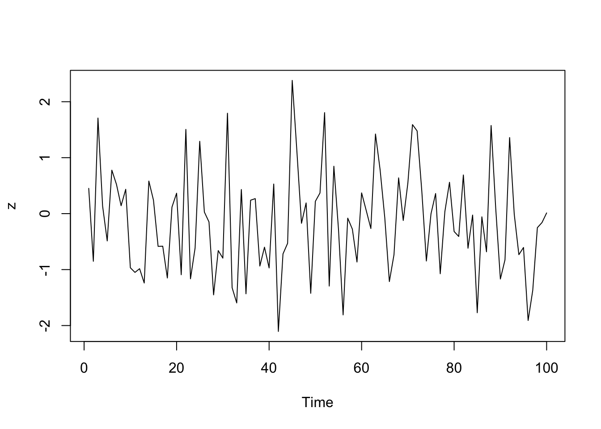

PIPES
Raymond L. Tremblay
4/26/2021
library(tidyverse)
library(magrittr)Pipe an object forward into a function or call expression.
iris| Sepal.Length | Sepal.Width | Petal.Length | Petal.Width | Species |
|---|---|---|---|---|
| 5.1 | 3.5 | 1.4 | 0.2 | setosa |
| 4.9 | 3 | 1.4 | 0.2 | setosa |
| 4.7 | 3.2 | 1.3 | 0.2 | setosa |
| 4.6 | 3.1 | 1.5 | 0.2 | setosa |
| 5 | 3.6 | 1.4 | 0.2 | setosa |
| 5.4 | 3.9 | 1.7 | 0.4 | setosa |
| 4.6 | 3.4 | 1.4 | 0.3 | setosa |
| 5 | 3.4 | 1.5 | 0.2 | setosa |
| 4.4 | 2.9 | 1.4 | 0.2 | setosa |
| 4.9 | 3.1 | 1.5 | 0.1 | setosa |
| 5.4 | 3.7 | 1.5 | 0.2 | setosa |
| 4.8 | 3.4 | 1.6 | 0.2 | setosa |
| 4.8 | 3 | 1.4 | 0.1 | setosa |
| 4.3 | 3 | 1.1 | 0.1 | setosa |
| 5.8 | 4 | 1.2 | 0.2 | setosa |
| 5.7 | 4.4 | 1.5 | 0.4 | setosa |
| 5.4 | 3.9 | 1.3 | 0.4 | setosa |
| 5.1 | 3.5 | 1.4 | 0.3 | setosa |
| 5.7 | 3.8 | 1.7 | 0.3 | setosa |
| 5.1 | 3.8 | 1.5 | 0.3 | setosa |
| 5.4 | 3.4 | 1.7 | 0.2 | setosa |
| 5.1 | 3.7 | 1.5 | 0.4 | setosa |
| 4.6 | 3.6 | 1 | 0.2 | setosa |
| 5.1 | 3.3 | 1.7 | 0.5 | setosa |
| 4.8 | 3.4 | 1.9 | 0.2 | setosa |
| 5 | 3 | 1.6 | 0.2 | setosa |
| 5 | 3.4 | 1.6 | 0.4 | setosa |
| 5.2 | 3.5 | 1.5 | 0.2 | setosa |
| 5.2 | 3.4 | 1.4 | 0.2 | setosa |
| 4.7 | 3.2 | 1.6 | 0.2 | setosa |
| 4.8 | 3.1 | 1.6 | 0.2 | setosa |
| 5.4 | 3.4 | 1.5 | 0.4 | setosa |
| 5.2 | 4.1 | 1.5 | 0.1 | setosa |
| 5.5 | 4.2 | 1.4 | 0.2 | setosa |
| 4.9 | 3.1 | 1.5 | 0.2 | setosa |
| 5 | 3.2 | 1.2 | 0.2 | setosa |
| 5.5 | 3.5 | 1.3 | 0.2 | setosa |
| 4.9 | 3.6 | 1.4 | 0.1 | setosa |
| 4.4 | 3 | 1.3 | 0.2 | setosa |
| 5.1 | 3.4 | 1.5 | 0.2 | setosa |
| 5 | 3.5 | 1.3 | 0.3 | setosa |
| 4.5 | 2.3 | 1.3 | 0.3 | setosa |
| 4.4 | 3.2 | 1.3 | 0.2 | setosa |
| 5 | 3.5 | 1.6 | 0.6 | setosa |
| 5.1 | 3.8 | 1.9 | 0.4 | setosa |
| 4.8 | 3 | 1.4 | 0.3 | setosa |
| 5.1 | 3.8 | 1.6 | 0.2 | setosa |
| 4.6 | 3.2 | 1.4 | 0.2 | setosa |
| 5.3 | 3.7 | 1.5 | 0.2 | setosa |
| 5 | 3.3 | 1.4 | 0.2 | setosa |
| 7 | 3.2 | 4.7 | 1.4 | versicolor |
| 6.4 | 3.2 | 4.5 | 1.5 | versicolor |
| 6.9 | 3.1 | 4.9 | 1.5 | versicolor |
| 5.5 | 2.3 | 4 | 1.3 | versicolor |
| 6.5 | 2.8 | 4.6 | 1.5 | versicolor |
| 5.7 | 2.8 | 4.5 | 1.3 | versicolor |
| 6.3 | 3.3 | 4.7 | 1.6 | versicolor |
| 4.9 | 2.4 | 3.3 | 1 | versicolor |
| 6.6 | 2.9 | 4.6 | 1.3 | versicolor |
| 5.2 | 2.7 | 3.9 | 1.4 | versicolor |
| 5 | 2 | 3.5 | 1 | versicolor |
| 5.9 | 3 | 4.2 | 1.5 | versicolor |
| 6 | 2.2 | 4 | 1 | versicolor |
| 6.1 | 2.9 | 4.7 | 1.4 | versicolor |
| 5.6 | 2.9 | 3.6 | 1.3 | versicolor |
| 6.7 | 3.1 | 4.4 | 1.4 | versicolor |
| 5.6 | 3 | 4.5 | 1.5 | versicolor |
| 5.8 | 2.7 | 4.1 | 1 | versicolor |
| 6.2 | 2.2 | 4.5 | 1.5 | versicolor |
| 5.6 | 2.5 | 3.9 | 1.1 | versicolor |
| 5.9 | 3.2 | 4.8 | 1.8 | versicolor |
| 6.1 | 2.8 | 4 | 1.3 | versicolor |
| 6.3 | 2.5 | 4.9 | 1.5 | versicolor |
| 6.1 | 2.8 | 4.7 | 1.2 | versicolor |
| 6.4 | 2.9 | 4.3 | 1.3 | versicolor |
| 6.6 | 3 | 4.4 | 1.4 | versicolor |
| 6.8 | 2.8 | 4.8 | 1.4 | versicolor |
| 6.7 | 3 | 5 | 1.7 | versicolor |
| 6 | 2.9 | 4.5 | 1.5 | versicolor |
| 5.7 | 2.6 | 3.5 | 1 | versicolor |
| 5.5 | 2.4 | 3.8 | 1.1 | versicolor |
| 5.5 | 2.4 | 3.7 | 1 | versicolor |
| 5.8 | 2.7 | 3.9 | 1.2 | versicolor |
| 6 | 2.7 | 5.1 | 1.6 | versicolor |
| 5.4 | 3 | 4.5 | 1.5 | versicolor |
| 6 | 3.4 | 4.5 | 1.6 | versicolor |
| 6.7 | 3.1 | 4.7 | 1.5 | versicolor |
| 6.3 | 2.3 | 4.4 | 1.3 | versicolor |
| 5.6 | 3 | 4.1 | 1.3 | versicolor |
| 5.5 | 2.5 | 4 | 1.3 | versicolor |
| 5.5 | 2.6 | 4.4 | 1.2 | versicolor |
| 6.1 | 3 | 4.6 | 1.4 | versicolor |
| 5.8 | 2.6 | 4 | 1.2 | versicolor |
| 5 | 2.3 | 3.3 | 1 | versicolor |
| 5.6 | 2.7 | 4.2 | 1.3 | versicolor |
| 5.7 | 3 | 4.2 | 1.2 | versicolor |
| 5.7 | 2.9 | 4.2 | 1.3 | versicolor |
| 6.2 | 2.9 | 4.3 | 1.3 | versicolor |
| 5.1 | 2.5 | 3 | 1.1 | versicolor |
| 5.7 | 2.8 | 4.1 | 1.3 | versicolor |
| 6.3 | 3.3 | 6 | 2.5 | virginica |
| 5.8 | 2.7 | 5.1 | 1.9 | virginica |
| 7.1 | 3 | 5.9 | 2.1 | virginica |
| 6.3 | 2.9 | 5.6 | 1.8 | virginica |
| 6.5 | 3 | 5.8 | 2.2 | virginica |
| 7.6 | 3 | 6.6 | 2.1 | virginica |
| 4.9 | 2.5 | 4.5 | 1.7 | virginica |
| 7.3 | 2.9 | 6.3 | 1.8 | virginica |
| 6.7 | 2.5 | 5.8 | 1.8 | virginica |
| 7.2 | 3.6 | 6.1 | 2.5 | virginica |
| 6.5 | 3.2 | 5.1 | 2 | virginica |
| 6.4 | 2.7 | 5.3 | 1.9 | virginica |
| 6.8 | 3 | 5.5 | 2.1 | virginica |
| 5.7 | 2.5 | 5 | 2 | virginica |
| 5.8 | 2.8 | 5.1 | 2.4 | virginica |
| 6.4 | 3.2 | 5.3 | 2.3 | virginica |
| 6.5 | 3 | 5.5 | 1.8 | virginica |
| 7.7 | 3.8 | 6.7 | 2.2 | virginica |
| 7.7 | 2.6 | 6.9 | 2.3 | virginica |
| 6 | 2.2 | 5 | 1.5 | virginica |
| 6.9 | 3.2 | 5.7 | 2.3 | virginica |
| 5.6 | 2.8 | 4.9 | 2 | virginica |
| 7.7 | 2.8 | 6.7 | 2 | virginica |
| 6.3 | 2.7 | 4.9 | 1.8 | virginica |
| 6.7 | 3.3 | 5.7 | 2.1 | virginica |
| 7.2 | 3.2 | 6 | 1.8 | virginica |
| 6.2 | 2.8 | 4.8 | 1.8 | virginica |
| 6.1 | 3 | 4.9 | 1.8 | virginica |
| 6.4 | 2.8 | 5.6 | 2.1 | virginica |
| 7.2 | 3 | 5.8 | 1.6 | virginica |
| 7.4 | 2.8 | 6.1 | 1.9 | virginica |
| 7.9 | 3.8 | 6.4 | 2 | virginica |
| 6.4 | 2.8 | 5.6 | 2.2 | virginica |
| 6.3 | 2.8 | 5.1 | 1.5 | virginica |
| 6.1 | 2.6 | 5.6 | 1.4 | virginica |
| 7.7 | 3 | 6.1 | 2.3 | virginica |
| 6.3 | 3.4 | 5.6 | 2.4 | virginica |
| 6.4 | 3.1 | 5.5 | 1.8 | virginica |
| 6 | 3 | 4.8 | 1.8 | virginica |
| 6.9 | 3.1 | 5.4 | 2.1 | virginica |
| 6.7 | 3.1 | 5.6 | 2.4 | virginica |
| 6.9 | 3.1 | 5.1 | 2.3 | virginica |
| 5.8 | 2.7 | 5.1 | 1.9 | virginica |
| 6.8 | 3.2 | 5.9 | 2.3 | virginica |
| 6.7 | 3.3 | 5.7 | 2.5 | virginica |
| 6.7 | 3 | 5.2 | 2.3 | virginica |
| 6.3 | 2.5 | 5 | 1.9 | virginica |
| 6.5 | 3 | 5.2 | 2 | virginica |
| 6.2 | 3.4 | 5.4 | 2.3 | virginica |
| 5.9 | 3 | 5.1 | 1.8 | virginica |
Exposition pipe
Expose the names in lhs to the rhs expression. This is useful when functions do not have a built-in data argument.
iris %>%
subset(Sepal.Length > mean(Sepal.Length)) | Sepal.Length | Sepal.Width | Petal.Length | Petal.Width | Species |
|---|---|---|---|---|
| 7 | 3.2 | 4.7 | 1.4 | versicolor |
| 6.4 | 3.2 | 4.5 | 1.5 | versicolor |
| 6.9 | 3.1 | 4.9 | 1.5 | versicolor |
| 6.5 | 2.8 | 4.6 | 1.5 | versicolor |
| 6.3 | 3.3 | 4.7 | 1.6 | versicolor |
| 6.6 | 2.9 | 4.6 | 1.3 | versicolor |
| 5.9 | 3 | 4.2 | 1.5 | versicolor |
| 6 | 2.2 | 4 | 1 | versicolor |
| 6.1 | 2.9 | 4.7 | 1.4 | versicolor |
| 6.7 | 3.1 | 4.4 | 1.4 | versicolor |
| 6.2 | 2.2 | 4.5 | 1.5 | versicolor |
| 5.9 | 3.2 | 4.8 | 1.8 | versicolor |
| 6.1 | 2.8 | 4 | 1.3 | versicolor |
| 6.3 | 2.5 | 4.9 | 1.5 | versicolor |
| 6.1 | 2.8 | 4.7 | 1.2 | versicolor |
| 6.4 | 2.9 | 4.3 | 1.3 | versicolor |
| 6.6 | 3 | 4.4 | 1.4 | versicolor |
| 6.8 | 2.8 | 4.8 | 1.4 | versicolor |
| 6.7 | 3 | 5 | 1.7 | versicolor |
| 6 | 2.9 | 4.5 | 1.5 | versicolor |
| 6 | 2.7 | 5.1 | 1.6 | versicolor |
| 6 | 3.4 | 4.5 | 1.6 | versicolor |
| 6.7 | 3.1 | 4.7 | 1.5 | versicolor |
| 6.3 | 2.3 | 4.4 | 1.3 | versicolor |
| 6.1 | 3 | 4.6 | 1.4 | versicolor |
| 6.2 | 2.9 | 4.3 | 1.3 | versicolor |
| 6.3 | 3.3 | 6 | 2.5 | virginica |
| 7.1 | 3 | 5.9 | 2.1 | virginica |
| 6.3 | 2.9 | 5.6 | 1.8 | virginica |
| 6.5 | 3 | 5.8 | 2.2 | virginica |
| 7.6 | 3 | 6.6 | 2.1 | virginica |
| 7.3 | 2.9 | 6.3 | 1.8 | virginica |
| 6.7 | 2.5 | 5.8 | 1.8 | virginica |
| 7.2 | 3.6 | 6.1 | 2.5 | virginica |
| 6.5 | 3.2 | 5.1 | 2 | virginica |
| 6.4 | 2.7 | 5.3 | 1.9 | virginica |
| 6.8 | 3 | 5.5 | 2.1 | virginica |
| 6.4 | 3.2 | 5.3 | 2.3 | virginica |
| 6.5 | 3 | 5.5 | 1.8 | virginica |
| 7.7 | 3.8 | 6.7 | 2.2 | virginica |
| 7.7 | 2.6 | 6.9 | 2.3 | virginica |
| 6 | 2.2 | 5 | 1.5 | virginica |
| 6.9 | 3.2 | 5.7 | 2.3 | virginica |
| 7.7 | 2.8 | 6.7 | 2 | virginica |
| 6.3 | 2.7 | 4.9 | 1.8 | virginica |
| 6.7 | 3.3 | 5.7 | 2.1 | virginica |
| 7.2 | 3.2 | 6 | 1.8 | virginica |
| 6.2 | 2.8 | 4.8 | 1.8 | virginica |
| 6.1 | 3 | 4.9 | 1.8 | virginica |
| 6.4 | 2.8 | 5.6 | 2.1 | virginica |
| 7.2 | 3 | 5.8 | 1.6 | virginica |
| 7.4 | 2.8 | 6.1 | 1.9 | virginica |
| 7.9 | 3.8 | 6.4 | 2 | virginica |
| 6.4 | 2.8 | 5.6 | 2.2 | virginica |
| 6.3 | 2.8 | 5.1 | 1.5 | virginica |
| 6.1 | 2.6 | 5.6 | 1.4 | virginica |
| 7.7 | 3 | 6.1 | 2.3 | virginica |
| 6.3 | 3.4 | 5.6 | 2.4 | virginica |
| 6.4 | 3.1 | 5.5 | 1.8 | virginica |
| 6 | 3 | 4.8 | 1.8 | virginica |
| 6.9 | 3.1 | 5.4 | 2.1 | virginica |
| 6.7 | 3.1 | 5.6 | 2.4 | virginica |
| 6.9 | 3.1 | 5.1 | 2.3 | virginica |
| 6.8 | 3.2 | 5.9 | 2.3 | virginica |
| 6.7 | 3.3 | 5.7 | 2.5 | virginica |
| 6.7 | 3 | 5.2 | 2.3 | virginica |
| 6.3 | 2.5 | 5 | 1.9 | virginica |
| 6.5 | 3 | 5.2 | 2 | virginica |
| 6.2 | 3.4 | 5.4 | 2.3 | virginica |
| 5.9 | 3 | 5.1 | 1.8 | virginica |
iris %>%
subset(Sepal.Length > mean(Sepal.Length)) %$%
cor(Sepal.Length, Sepal.Width)## [1] 0.3361992iris %>%
filter(Sepal.Length > 1.6 ) %$%
cor(Sepal.Length, Sepal.Width)## [1] -0.1175698Second Example of Exposition Pipe
#set.seed(1234)
data.frame(z = rnorm(100)) %$%
ts.plot(z)
Assignment pipe
Pipe an object forward into a function or call expression and update the lhs object with the resulting value.
x <- rnorm(100)
x## [1] -0.22990125 0.28294190 -0.74122026 -0.46546739 1.00657379 -0.05741495
## [7] 0.54956318 -1.17644881 0.02117409 0.70513508 -1.25745551 0.82499566
## [13] -0.51510392 -1.62934531 1.75685391 0.78717330 0.71354974 -0.19651080
## [19] -0.96434388 1.52331929 0.38162566 -0.85422412 -0.18178723 0.08260867
## [25] 0.84135859 0.35969452 0.65599853 -0.67239200 0.29252849 -0.99672648
## [31] -0.92588223 -1.65850217 -0.96556348 -0.25660163 1.52416258 0.95148044
## [37] -0.10374500 -1.07434698 0.16419490 -0.06750797 -0.94061112 -0.70595407
## [43] 0.60285248 1.11951860 -0.22662699 -0.91633185 0.14347265 0.13620559
## [49] 1.37796807 -0.87607047 -0.34315444 -0.75728123 -0.71282436 -0.23182366
## [55] -0.84011499 0.07971651 -1.24924416 -1.09748573 1.43452802 1.59499818
## [61] -0.90753885 -0.75593593 -1.27523794 0.58850381 -0.31736363 -1.17112408
## [67] -2.10349308 0.27937142 0.12425923 0.26429390 1.75653614 -0.48590553
## [73] -1.07652457 -0.81956662 2.11243696 -0.70146315 -1.31024621 -0.59364977
## [79] 1.84399243 0.78455731 1.26970662 1.03655209 -0.29771229 -1.57414262
## [85] 2.14462140 -0.62797511 -1.70889224 0.24728063 0.49655717 -0.20850656
## [91] 1.06281102 -1.26749979 -0.37766393 1.35678946 -0.65655266 -0.56570828
## [97] -0.94638633 -0.43194992 1.55020216 -1.61664757x2= data.frame(x)
x2| x |
|---|
| -0.23 |
| 0.283 |
| -0.741 |
| -0.465 |
| 1.01 |
| -0.0574 |
| 0.55 |
| -1.18 |
| 0.0212 |
| 0.705 |
| -1.26 |
| 0.825 |
| -0.515 |
| -1.63 |
| 1.76 |
| 0.787 |
| 0.714 |
| -0.197 |
| -0.964 |
| 1.52 |
| 0.382 |
| -0.854 |
| -0.182 |
| 0.0826 |
| 0.841 |
| 0.36 |
| 0.656 |
| -0.672 |
| 0.293 |
| -0.997 |
| -0.926 |
| -1.66 |
| -0.966 |
| -0.257 |
| 1.52 |
| 0.951 |
| -0.104 |
| -1.07 |
| 0.164 |
| -0.0675 |
| -0.941 |
| -0.706 |
| 0.603 |
| 1.12 |
| -0.227 |
| -0.916 |
| 0.143 |
| 0.136 |
| 1.38 |
| -0.876 |
| -0.343 |
| -0.757 |
| -0.713 |
| -0.232 |
| -0.84 |
| 0.0797 |
| -1.25 |
| -1.1 |
| 1.43 |
| 1.59 |
| -0.908 |
| -0.756 |
| -1.28 |
| 0.589 |
| -0.317 |
| -1.17 |
| -2.1 |
| 0.279 |
| 0.124 |
| 0.264 |
| 1.76 |
| -0.486 |
| -1.08 |
| -0.82 |
| 2.11 |
| -0.701 |
| -1.31 |
| -0.594 |
| 1.84 |
| 0.785 |
| 1.27 |
| 1.04 |
| -0.298 |
| -1.57 |
| 2.14 |
| -0.628 |
| -1.71 |
| 0.247 |
| 0.497 |
| -0.209 |
| 1.06 |
| -1.27 |
| -0.378 |
| 1.36 |
| -0.657 |
| -0.566 |
| -0.946 |
| -0.432 |
| 1.55 |
| -1.62 |
df= x %<>% abs %>% mean
df## [1] 0.8251837x2 %>% select(x) %>%
mutate(sqrtt= sqrt(x))## Warning: There was 1 warning in `mutate()`.
## ℹ In argument: `sqrtt = sqrt(x)`.
## Caused by warning in `sqrt()`:
## ! NaNs produced| x | sqrtt |
|---|---|
| -0.23 | NaN |
| 0.283 | 0.532 |
| -0.741 | NaN |
| -0.465 | NaN |
| 1.01 | 1 |
| -0.0574 | NaN |
| 0.55 | 0.741 |
| -1.18 | NaN |
| 0.0212 | 0.146 |
| 0.705 | 0.84 |
| -1.26 | NaN |
| 0.825 | 0.908 |
| -0.515 | NaN |
| -1.63 | NaN |
| 1.76 | 1.33 |
| 0.787 | 0.887 |
| 0.714 | 0.845 |
| -0.197 | NaN |
| -0.964 | NaN |
| 1.52 | 1.23 |
| 0.382 | 0.618 |
| -0.854 | NaN |
| -0.182 | NaN |
| 0.0826 | 0.287 |
| 0.841 | 0.917 |
| 0.36 | 0.6 |
| 0.656 | 0.81 |
| -0.672 | NaN |
| 0.293 | 0.541 |
| -0.997 | NaN |
| -0.926 | NaN |
| -1.66 | NaN |
| -0.966 | NaN |
| -0.257 | NaN |
| 1.52 | 1.23 |
| 0.951 | 0.975 |
| -0.104 | NaN |
| -1.07 | NaN |
| 0.164 | 0.405 |
| -0.0675 | NaN |
| -0.941 | NaN |
| -0.706 | NaN |
| 0.603 | 0.776 |
| 1.12 | 1.06 |
| -0.227 | NaN |
| -0.916 | NaN |
| 0.143 | 0.379 |
| 0.136 | 0.369 |
| 1.38 | 1.17 |
| -0.876 | NaN |
| -0.343 | NaN |
| -0.757 | NaN |
| -0.713 | NaN |
| -0.232 | NaN |
| -0.84 | NaN |
| 0.0797 | 0.282 |
| -1.25 | NaN |
| -1.1 | NaN |
| 1.43 | 1.2 |
| 1.59 | 1.26 |
| -0.908 | NaN |
| -0.756 | NaN |
| -1.28 | NaN |
| 0.589 | 0.767 |
| -0.317 | NaN |
| -1.17 | NaN |
| -2.1 | NaN |
| 0.279 | 0.529 |
| 0.124 | 0.353 |
| 0.264 | 0.514 |
| 1.76 | 1.33 |
| -0.486 | NaN |
| -1.08 | NaN |
| -0.82 | NaN |
| 2.11 | 1.45 |
| -0.701 | NaN |
| -1.31 | NaN |
| -0.594 | NaN |
| 1.84 | 1.36 |
| 0.785 | 0.886 |
| 1.27 | 1.13 |
| 1.04 | 1.02 |
| -0.298 | NaN |
| -1.57 | NaN |
| 2.14 | 1.46 |
| -0.628 | NaN |
| -1.71 | NaN |
| 0.247 | 0.497 |
| 0.497 | 0.705 |
| -0.209 | NaN |
| 1.06 | 1.03 |
| -1.27 | NaN |
| -0.378 | NaN |
| 1.36 | 1.16 |
| -0.657 | NaN |
| -0.566 | NaN |
| -0.946 | NaN |
| -0.432 | NaN |
| 1.55 | 1.25 |
| -1.62 | NaN |
df2=x %<>% abs %>% sort
df2## [1] 0.8251837Tee pipe
Pipe a value forward into a function- or call expression and return the original value instead of the result. This is useful when an expression is used for its side-effect, say plotting or printing.
rnorm(200) %>%
matrix(ncol = 2)%T>%
plot %>% # plot usually does not return anything.
colSums
## [1] 11.82203 -31.27773Other margrittr function
is_greater_than, “>”
iris %>%
select(Sepal.Width) %>%
is_greater_than(3.5) %>%
head()## Sepal.Width
## [1,] FALSE
## [2,] FALSE
## [3,] FALSE
## [4,] FALSE
## [5,] TRUE
## [6,] TRUEiris %>%
select(Sepal.Width) %>%
divide_by(3)| Sepal.Width |
|---|
| 1.17 |
| 1 |
| 1.07 |
| 1.03 |
| 1.2 |
| 1.3 |
| 1.13 |
| 1.13 |
| 0.967 |
| 1.03 |
| 1.23 |
| 1.13 |
| 1 |
| 1 |
| 1.33 |
| 1.47 |
| 1.3 |
| 1.17 |
| 1.27 |
| 1.27 |
| 1.13 |
| 1.23 |
| 1.2 |
| 1.1 |
| 1.13 |
| 1 |
| 1.13 |
| 1.17 |
| 1.13 |
| 1.07 |
| 1.03 |
| 1.13 |
| 1.37 |
| 1.4 |
| 1.03 |
| 1.07 |
| 1.17 |
| 1.2 |
| 1 |
| 1.13 |
| 1.17 |
| 0.767 |
| 1.07 |
| 1.17 |
| 1.27 |
| 1 |
| 1.27 |
| 1.07 |
| 1.23 |
| 1.1 |
| 1.07 |
| 1.07 |
| 1.03 |
| 0.767 |
| 0.933 |
| 0.933 |
| 1.1 |
| 0.8 |
| 0.967 |
| 0.9 |
| 0.667 |
| 1 |
| 0.733 |
| 0.967 |
| 0.967 |
| 1.03 |
| 1 |
| 0.9 |
| 0.733 |
| 0.833 |
| 1.07 |
| 0.933 |
| 0.833 |
| 0.933 |
| 0.967 |
| 1 |
| 0.933 |
| 1 |
| 0.967 |
| 0.867 |
| 0.8 |
| 0.8 |
| 0.9 |
| 0.9 |
| 1 |
| 1.13 |
| 1.03 |
| 0.767 |
| 1 |
| 0.833 |
| 0.867 |
| 1 |
| 0.867 |
| 0.767 |
| 0.9 |
| 1 |
| 0.967 |
| 0.967 |
| 0.833 |
| 0.933 |
| 1.1 |
| 0.9 |
| 1 |
| 0.967 |
| 1 |
| 1 |
| 0.833 |
| 0.967 |
| 0.833 |
| 1.2 |
| 1.07 |
| 0.9 |
| 1 |
| 0.833 |
| 0.933 |
| 1.07 |
| 1 |
| 1.27 |
| 0.867 |
| 0.733 |
| 1.07 |
| 0.933 |
| 0.933 |
| 0.9 |
| 1.1 |
| 1.07 |
| 0.933 |
| 1 |
| 0.933 |
| 1 |
| 0.933 |
| 1.27 |
| 0.933 |
| 0.933 |
| 0.867 |
| 1 |
| 1.13 |
| 1.03 |
| 1 |
| 1.03 |
| 1.03 |
| 1.03 |
| 0.9 |
| 1.07 |
| 1.1 |
| 1 |
| 0.833 |
| 1 |
| 1.13 |
| 1 |
PIPES
Ejercicio con el packete “maggritr”
Este paquete proporciona un mecanismo para encadenar comandos con un nuevo operador de tubería hacia adelante,%>%. Este operador enviará un valor, o el resultado de una expresión, en la siguiente llamada / expresión de función.
En el mismo paquete hay múltiples otras funciones como
“%<>%”, “%$%,”%T>%“,”is_less_than” y otros.
El trabajo consistente en que tiene que seleccionar dos de las funciones en el paquete Excluyendo “%>%” y solamente una de las siguientes (“%<>%”, “%$%,”%T>%“), y para cada uno dar 2 ejemplos como utilizar esa función. Tiene que ser EXPLICITO de como funciona las funciones que enseñan y su interpretación. Puede ser que tiene que demostrar el resultado si no los usa correctamente. Pon se el lugar de una persona que no sabe nada de R, que tiene que explicar paso a paso como funciona las funciones. Usa datos sencillo, crea unos data frame en RMarkdown (no importa los datos).
Para ver la lista de funciones en el paquete vea
library(magrittr)
help(package=magrittr)Puntuación (30 puntos total) Cada función bien explicada y con unos ejemplos sencillos, 15 puntos (10 puntos por las explicaciones y 5 puntos por los scripts correctos).